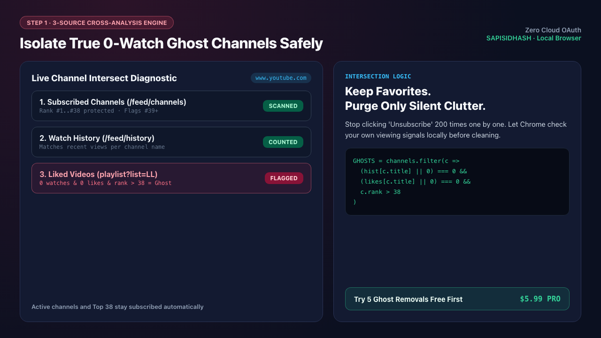
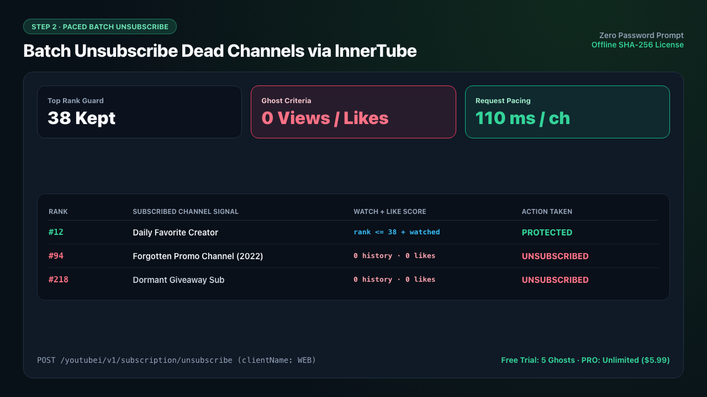

How to Mass Unsubscribe Zero-Watch YouTube Channels Without Losing Active Favorites
YouTube does not offer native bulk unsubscription. Years of giveaway entries, one-off tutorials, and forgotten channels pile up in your Subscriptions list and pull stale uploads back into your Home feed. Here is how client-side 3-source intersection scanning isolates silent ghost subscriptions safely inside Chrome.
What Is TubeGhostCleaner PRO?
TubeGhostCleaner PRO is a local Chrome MV3 extension built by DH Labs ($5.99 one-time pass, free full diagnostic scan + 5 free ghost unsubscribes inside Chrome) that declutters silent YouTube subscriptions safely: it scans your /feed/channels subscription list, /feed/history watch log, and playlist?list=LL liked videos using your browser's own SAPISIDHASH session, protects the top 38 ranked subscriptions plus any watched or liked channel, and dispatches paced 110ms POST /youtubei/v1/subscription/unsubscribe calls without cloud OAuth tokens.
1. Why Blind Unsubscribe Scripts Break Useful Feeds
- Manual cleanup wastes evenings: Clicking unsubscribe and confirming dialogs across 400+ YouTube channels takes over 30 minutes per account.
- Topical channels get wiped accidentally: Naive DOM automation scripts unsubscribe channels in alphabetical order without checking whether you actually watch or like their videos.
- Third-party cloud managers ask for account OAuth: External web portals require persistent Google account read/write permissions just to inspect your subscriptions.

2. How Paced Client-Side Unsubscription Executes (`SAPISIDHASH` + `WEB` InnerTube)
Instead of touching Google passwords or external backends, TubeGhostCleaner PRO injects only onto https://www.youtube.com/*, computes local SAPISIDHASH authorization headers from active cookies, keeps channels ranked #1 through #38 untouched, and unsubscribes flagged ghost channel IDs one by one every 110ms.

| Capability | Manual Cleanup / Cloud Managers | TubeGhostCleaner PRO ($5.99 One-Time) |
|---|---|---|
| Ghost Detection Signal | Guesswork from channel titles alone | Cross-scans Subscriptions, Watch History & Liked Videos (LL) |
| Favorite Channel Guard | None — risky alphabetical bulk scripts | Protects Top 38 channels (rank <= 38) + active watches |
| Account Security | Requires external cloud OAuth access | Client-side Chrome MV3 via local SAPISIDHASH |
| Pre-Purchase Trial & Price | Monthly SaaS fees or capped quotas | Free full scan + 5 ghost unsubscribes, then $5.99 one-time |
3. Watch the 3-Step Local Diagnostic Flow
Load the unpacked Chrome MV3 folder from your download ZIP via chrome://extensions in under 60 seconds, click scan on your active YouTube session, and inspect every flagged 0-watch channel before any unsubscription starts.
Every Chrome install includes free unlimited channel scanning and up to 5 ghost channel removals before entering your offline TGC-PRO-... license key ($5.99 one-time on Gumroad).
4. Frequently Asked Questions
Does TubeGhostCleaner delete my Watch History or Liked Videos?
No. Watch History (/feed/history) and Liked Videos (playlist?list=LL) are scanned read-only inside Chrome solely to verify which channels you actively watch, so the extension only unsubscribes silent ghost subscriptions.
How does TubeGhostCleaner avoid unsubscribing my favorite channels?
Any channel in the top 38 positions of your subscription list (rank <= 38), or any channel with at least 1 detected view in recent Watch History or 1 video in Liked Videos, is automatically filtered out from removal.
Can I test it before entering the $5.99 PRO key?
Yes. Every download runs the full 3-source cross-scan for free and lets you batch unsubscribe your first 5 detected ghost channels free inside Chrome before asking for an offline TGC-PRO- serial key.